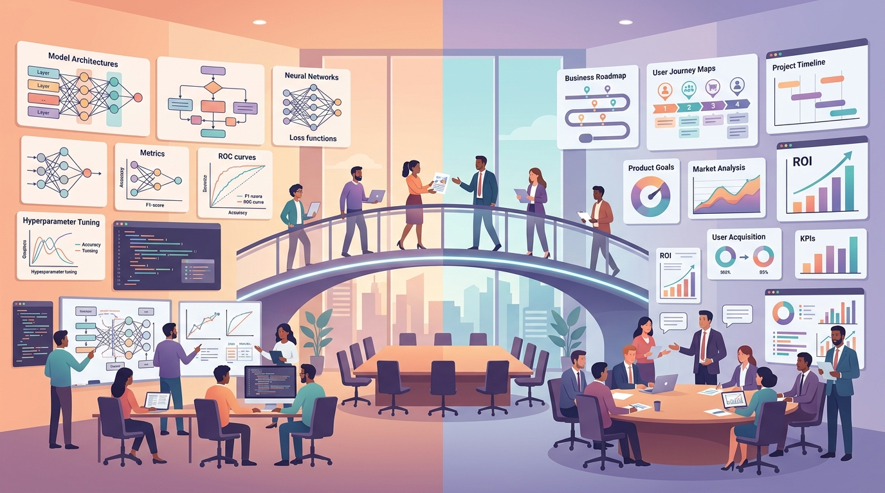

"Strategy without tactics is the slowest route to victory. Tactics without strategy is the noise before defeat."
A Strategic AI Agent

Technical excellence alone does not guarantee successful LLM adoption. Organizations that thrive with AI combine strong engineering foundations with disciplined strategy, clear product thinking, and rigorous return-on-investment measurement. Without these business-facing capabilities, even the most sophisticated models end up as expensive prototypes that never reach production.
This module bridges the gap between LLM engineering and business impact. It begins with strategic frameworks for identifying and prioritizing AI use cases, then covers the product management skills needed to translate business problems into LLM-powered solutions. The module provides concrete ROI measurement techniques for quantifying value, vendor evaluation frameworks for make-or-buy decisions, and infrastructure planning guidance for compute budgeting and deployment architecture.
Whether you are an individual contributor building the business case for an LLM project, a tech lead evaluating vendors, or a product manager defining success metrics, this module equips you with the frameworks and vocabulary to connect technical decisions to organizational outcomes.
Who: Klarna, a Swedish fintech company processing 2 million transactions daily.
Situation: Customer support costs were scaling linearly with user growth, consuming a significant share of operating expenses.
Problem: Hiring more agents was unsustainable; wait times were climbing past five minutes during peak hours.
Decision: Deploy an LLM-powered assistant to handle first-contact resolution for common queries (refunds, order tracking, payment plans).
How: Integrated OpenAI's GPT-4 with their existing CRM, trained on 50,000 historical support transcripts, and ran a four-week A/B test against human agents.
Result: The AI assistant handled 2.3 million conversations in its first month, matching human agents on customer satisfaction while reducing average resolution time from 11 minutes to under 2 minutes.
Lesson: Starting with a well-scoped, high-volume use case (not a moonshot) is the fastest path to measurable ROI. The key was choosing a domain where mistakes are recoverable and feedback is immediate.
Who: A 200-attorney firm specializing in commercial litigation.
Situation: Junior associates spent 40% of their time on document review and contract clause extraction.
Problem: The firm initially budgeted $800K to build a custom fine-tuned model for legal document analysis.
Dilemma: Six months into development, the custom model still underperformed GPT-4 with well-crafted prompts on their benchmark suite.
Decision: Scrapped the custom model. Redirected budget to a RAG pipeline over their document corpus using an off-the-shelf LLM API.
Result: Deployed in eight weeks instead of the projected 14 months. Document review throughput increased 3x, and the total cost of ownership fell to $180K per year.
Lesson: The build vs. buy decision should be revisited continuously. Sunk cost bias is the most expensive bias in AI strategy; pivot early when the data tells you to.
Who: Duolingo, the language-learning platform with over 500 million registered users.
Situation: The team wanted to offer personalized conversation practice and grammar explanations, features that would require hundreds of content creators to build manually.
Problem: Generating high-quality, pedagogically sound content at the scale of 40+ languages is prohibitively expensive with human-only workflows.
Decision: Launched "Duolingo Max" powered by GPT-4, offering AI conversation partners and instant grammar breakdowns as a premium tier.
How: Built a structured evaluation pipeline: human linguists rated 10% of AI outputs weekly, feeding corrections back into prompt improvements.
Result: Premium subscription revenue increased meaningfully, and content production velocity grew 4x. The cost per lesson generated dropped by over 80% compared to purely human authoring.
Lesson: LLM ROI is strongest when AI augments a process that was previously bottlenecked by skilled human labor. The evaluation loop (linguists reviewing AI output) was as important as the model itself.
Who: A healthcare analytics startup with $30M in funding.
Situation: The team fine-tuned a 70B parameter model for clinical note summarization, achieving state-of-the-art accuracy on their benchmark.
Problem: Inference costs at production scale (50,000 notes per day) would consume $420K per month on cloud GPU instances, exceeding the entire engineering budget.
Decision: Distilled the 70B model into a 7B variant, then quantized to INT8, and deployed on L40S GPUs instead of H100s.
How: Used a teacher-student distillation pipeline (covered in Chapter 15), validated that the smaller model retained 94% of the original's accuracy on their clinical benchmarks.
Result: Monthly inference cost dropped from $420K to $38K. Latency improved from 4.2 seconds to 0.9 seconds per note.
Lesson: Compute planning must happen before model selection, not after. The most accurate model is worthless if you cannot afford to run it at production scale.
Who: Walmart's enterprise technology team, supporting operations across 10,500 stores worldwide.
Situation: Different business units needed LLM capabilities for diverse tasks: product descriptions, employee Q&A, supply chain forecasting summaries, and customer chatbots.
Problem: Locking into a single LLM vendor created concentration risk. An outage at one provider would affect all AI-powered systems simultaneously.
Decision: Adopted a multi-provider architecture with an internal routing layer that directs requests to the optimal model based on task type, latency requirements, and cost.
How: Built a lightweight orchestration service that evaluates each request against provider-specific benchmarks and routes accordingly. Fallback logic automatically redirects traffic during outages.
Result: Achieved 99.97% uptime across all LLM-powered features, reduced average cost per token by 35% through intelligent routing, and maintained the flexibility to onboard new providers within days.
Lesson: Vendor diversification is not just risk management; it is a cost optimization strategy. The routing layer becomes a competitive advantage as the LLM market continues to shift rapidly.
Kaplan, J., McCandlish, S., Henighan, T., Brown, T. B., Chess, B., Child, R., Gray, S., Radford, A., Wu, J., & Amodei, D. (2020). "Scaling Laws for Neural Language Models." arXiv:2001.08361
Establishes the power-law relationships between compute, data, model size, and performance that underpin LLM infrastructure planning.
Bommasani, R., Hudson, D. A., Adeli, E., et al. (2022). "On the Opportunities and Risks of Foundation Models." arXiv:2108.07258
Stanford's comprehensive report on foundation model economics, societal impact, and strategic considerations for organizations.
Peng, S., Kalliamvakou, E., Cihon, P., & Demirer, M. (2023). "The Impact of AI on Developer Productivity: Evidence from GitHub Copilot." arXiv:2302.06590
Rigorous study measuring the productivity impact of AI coding assistants, finding 55% faster task completion with Copilot.
Andreessen Horowitz (2024). "The State of AI Infrastructure." a16z.com/ai
Annual industry report covering AI infrastructure spending, vendor market share, and enterprise adoption patterns.
McKinsey Global Institute (2024). "The Economic Potential of Generative AI." mckinsey.com
Estimates generative AI could add $2.6 to $4.4 trillion annually across industries, with detailed sector-by-sector ROI projections.
Iansiti, M., & Lakhani, K. R. (2020). Competing in the Age of AI. Harvard Business Review Press. hbs.edu
Examines how AI reshapes business strategy, operating models, and competitive dynamics across industries.
Agrawal, A., Gans, J., & Goldfarb, A. (2022). Power and Prediction: The Disruptive Economics of Artificial Intelligence. Harvard Business Review Press. predictionmachines.ai
Provides economic frameworks for understanding AI's value creation, covering decision-making cost reduction and system-level disruption.
Huyen, C. (2022). Designing Machine Learning Systems. O'Reilly Media. oreilly.com
Covers the full lifecycle of ML systems from requirements to deployment, with practical guidance on cost estimation and infrastructure decisions.
OpenRouter. openrouter.ai
Unified API gateway for routing requests across multiple LLM providers with cost tracking and model comparison.
Weights & Biases. Weights & Biases, Inc. github.com/wandb/wandb
Experiment tracking and ML operations platform used for monitoring training costs, model performance, and resource utilization.
MLflow. Linux Foundation. github.com/mlflow/mlflow
Open-source platform for managing the ML lifecycle including experiment tracking, model registry, and deployment.
Helicone. github.com/Helicone/helicone
Open-source LLM observability platform focused on cost tracking, usage analytics, and provider comparison.
In the next section, Section 28.1: LLM Strategy & Use Case Prioritization, we cover LLM strategy and use case prioritization, building the frameworks for identifying high-value AI opportunities.